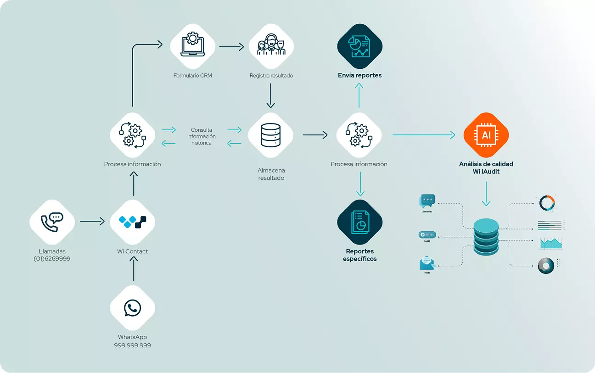

Atención al cliente
Resolución de consultas rápida y personalizada, escalamiento inteligente a agentes humanos, gestión de reclamos y seguimiento, y análisis de sentimientos y retroalimentación.
Conecta con tus clientes a través de todos los canales en tiempo real: teléfono, chat, redes sociales, email y más, desde una única plataforma.
Wi Contact es un software de contact center omnicanal diseñado para centralizar y gestionar de manera eficiente las interacciones con los clientes a través de diversos canales: voz, chat, correo electrónico, redes sociales, mensajería instantánea y videollamadas. Su integración con inteligencia artificial permite automatizar procesos clave, como la clasificación y priorización de interacciones, la generación de respuestas inteligentes y el análisis avanzado de datos para mejorar la toma de decisiones.
Destaca por ofrecer una experiencia unificada, adaptándose a las necesidades específicas de cada cliente, al tiempo que optimiza el tiempo y los recursos de los agentes para maximizar la productividad y la satisfacción del cliente.

Un sistema omnicanal permite interactuar con los clientes a través de teléfono, correo electrónico, mensajería instantánea (WhatsApp, Telegram), redes sociales (Facebook, Twitter), chat en vivo y videollamadas, todo gestionado desde una única plataforma. Esto permite ofrecer una experiencia consistente al cliente, independientemente del canal que elija.
Los agentes tienen acceso completo al historial de la conversación del cliente, lo que facilita la continuidad sin que el cliente deba repetir su información o contexto al cambiar de canal.
Los chatbots basados en IA automatizan respuestas, resolviendo consultas frecuentes o simples y mejorando la eficiencia operativa al reducir la carga de trabajo de los agentes humanos. Pueden responder 24/7 y escalar a agentes humanos cuando sea necesario.
A través de IA y PLN, los chatbots comprenden mejor las preguntas de los clientes, pueden identificar sentimientos y ofrecer respuestas más humanizadas.
Utilizando machine learning, los chatbots mejoran con el tiempo, anticipando mejor las necesidades del cliente y ofreciendo soluciones más precisas.
La IA puede analizar las interacciones con los clientes (por texto o voz) para detectar el sentimiento o el tono emocional (satisfacción, frustración, etc.), lo que ayuda a los agentes a intervenir de manera más efectiva cuando se detecta un sentimiento negativo o urgente.
Los sistemas de IA pueden proporcionar sugerencias o información adicional en tiempo real a los agentes durante una llamada o chat, mejorando la calidad y rapidez de las respuestas.
La IA puede dirigir automáticamente a los clientes al agente más adecuado basándose en su historial, necesidades y sentimientos detectados, optimizando la gestión de recursos.
Las videollamadas permiten una comunicación visual directa entre el cliente y el agente, útil para consultas complejas, demostraciones de productos o soluciones visuales.
Durante una videollamada, los agentes pueden compartir pantallas, documentos o realizar demostraciones, lo que agrega un valor significativo a la experiencia del cliente.
La videollamada puede ayudar a construir relaciones más cercanas y generar mayor confianza con los clientes, especialmente cuando se resuelven problemas complejos o se realizan ventas de productos que requieren una explicación detallada.
El sistema ofrece dashboards con información en tiempo real sobre el rendimiento de los agentes, la duración de las interacciones, los niveles de satisfacción del cliente y el desempeño del chatbot.
La IA también puede generar informes sobre tendencias de comportamiento de clientes, patrones de consultas comunes y el rendimiento de la atención a través de distintos canales.
Este tipo de sistema es altamente escalable: puede crecer junto con las necesidades de la empresa, agregando más agentes, canales y funcionalidades según sea necesario.
Los sistemas omnicanal permiten integrar nuevos canales conforme surgen, asegurando que el sistema esté siempre actualizado y alineado con las preferencias del cliente. Al ser una plataforma desarrollada por nosotros, se puede ajustar a las necesidades del cliente, desarrollándola e implementándola según lo que requiera.
Resolución de consultas rápida y personalizada, escalamiento inteligente a agentes humanos, gestión de reclamos y seguimiento, y análisis de sentimientos y retroalimentación.
Resolución rápida de problemas técnicos, escalamiento eficiente a soporte humano, proactividad en soporte técnico, seguimiento automatizado y gestión de casos, y análisis predictivo con mejoras continuas.
Automatización del contacto inicial, calificación de prospectos, seguimiento multicanal personalizado, recomendaciones inteligentes, análisis de conversaciones y uso de IA.
Automatización de consultas comunes de empleados e integración con sistemas de gestión de personal.
Automatización del proceso de incorporación y capacitación continuada.
Automatización de solicitudes de permiso y vacaciones, con aprobación rápida.
Encuestas de retroalimentación automáticas y análisis de sentimientos y tendencias.

Wi Contact soporta una amplia gama de canales, incluyendo llamadas telefónicas, WhatsApp, redes sociales como Facebook Messenger e Instagram, correos electrónicos, chat en vivo y más. Además, ofrecemos soporte para chatbots impulsados por IA para automatizar interacciones.
Sí, Wi Contact está diseñado para integrarse sin complicaciones con la mayoría de los sistemas actuales, incluyendo CRMs, ERPs y plataformas de comunicación. Contamos con APIs robustas y documentación detallada para garantizar una implementación ágil.
Claro que sí. Brindamos soporte técnico 24/7 con un equipo especializado listo para ayudarte en cualquier momento. Además, ofrecemos recursos como guías, tutoriales y capacitaciones para maximizar el uso de la plataforma.
Puedes ampliar tus licencias o agregar módulos adicionales según sea necesario. Nuestro equipo comercial y tecnológico te ayudará con el proceso.
Sí, los supervisores pueden escuchar llamadas en tiempo real, supervisar chats y realizar intervenciones si es necesario.
Puedes gestionar agentes desde un panel de administración, asignarles canales específicos, supervisar su desempeño y configurar roles y permisos.
Cuéntanos tu operación.